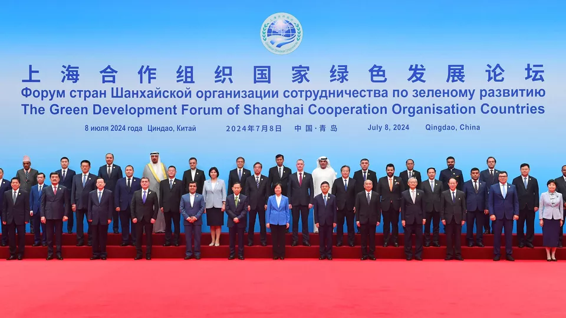

生态兴则文明兴，生态衰则文明衰。当今世界，在全球气候变化的大背景下，气候变暖、环境污染、资源能源逐渐枯竭、生物多样性加速丧失...... 不约而同地成为了全球各国共同的威胁与挑战。《生物多样性公约》、《巴黎协定》、《联合国防治荒漠化公约》等合约的签订展现出绿色低碳已是当今世界发展的潮流和趋势。加快绿色转型，实现可持续发展目标，是各国面临的共同任务，其中也蕴含着广阔的合作交流空间。
2024年7月8日，由上海合作组织睦邻友好合作委员会、生态环境部、山东省人民政府、上海合作组织秘书部主办的上海合作组织国家绿色发展论坛在青岛成功举办。 该论坛就“携手绿色发展，推动人与自然和谐共生”主题进行深入讨论并达成共识，宣传生态文明和绿色低碳发展理念。值得一提的是，这是中国接任上海合作组织轮值主席国后的首场主场活动，也是上合组织国家间首个以绿色发展为主题的高级别活动。
排除发展困境、促进绿色低碳需要各个国家携手共进、团结协作、互利互惠，在此次论坛上，我们可以看到众多国家做出的努力。例如，哈萨克斯坦计划为使用前沿碳排放技术的大型企业实行税收减免，已经制定了2035年国家自主减排贡献目标和2060年低碳转型发展的国家战略；吉尔吉斯斯坦全面开展适应性碳政策制定，促进绿色、低碳和可持续发展；阿塞拜疆为实现2030年减少35%温室气体排放的目标，在能源、工业、农业以及林业等方面减少碳排放并且制定了一系列计划进行保障；还有巴基斯坦将年度预算的6%至9%投入于气候行动和复原力建设，希望在未来减少二氧化碳的排放等等。与会的各国高级代表就绿色、环保、低碳等方面展开讨论，学习并分享各个国家的成功经验。
而中国作为世界第二大经济体，第一大出口贸易国，同时也是上合组织的创始国之一的国家，也提出力争在2030年实现“碳达峰”，2060年实现“碳中和”的“双碳”目标，并为之付出努力，在绿色发展的道路上体现出中国担当。在“绿水青山就是金山银山”的习近平生态文明思想的绿色发展观的指导下，中国在生态文明建设和生态环境保护工作取得良好成效，绿色低碳循环发展取得新进展。除此之外，中国在《推动共建丝绸之路经济带和21世纪海上丝绸之路的愿景与行动》中倡导绿色“一带一路”建设，打造命运共同体，彰显着中国在全球生态治理中的大国担当。
“双碳”路上，奋“绿”前行。与会嘉宾从五湖四海远道而来，真挚坦诚地坐下来，凝聚绿色低碳发展智慧，探讨未来文明方向——此次论坛， 上合组织国家在绿色能源、绿色产业、应对气候变化等领域深度合作，发布了“共建绿色发展关系，共促可持续发展”倡议。 保护生态环境、推动绿色发展是上海合作组织国家的共识，未来相信各国会在绿色发展领域有更深地交流合作，经济社会可持续发展，谱写美好新篇章。